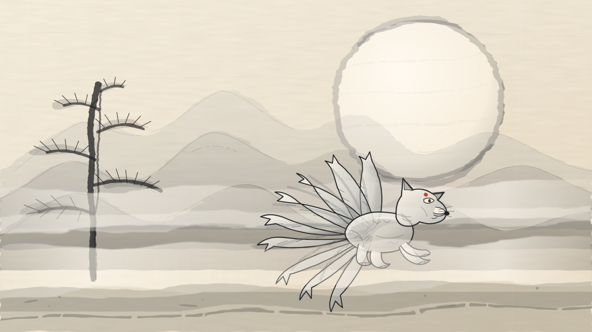
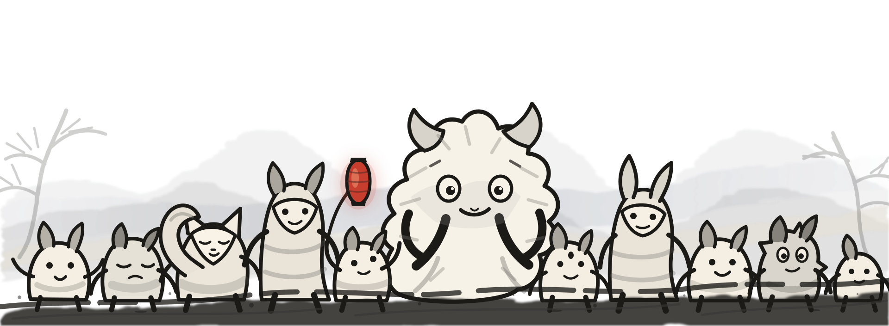
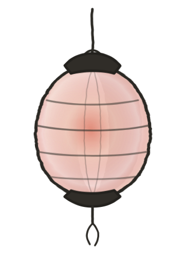
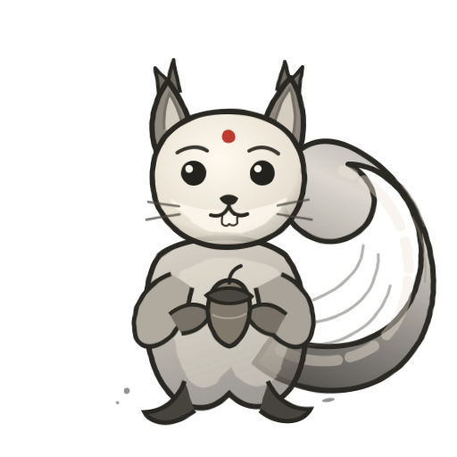
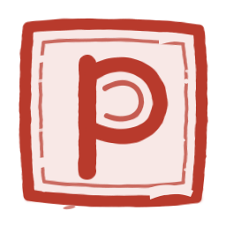
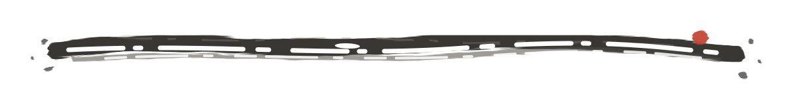
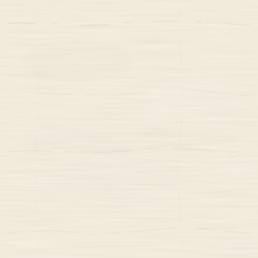

Light mode concept · ink & wash
Spirits Along the Ridge
Mountain wash, fine contour, one vermillion breath. Familiar slots, sharper personalities.
Landscape and fox spirit

Footer spirit gathering

Object and mascot sprites


Marks and material


